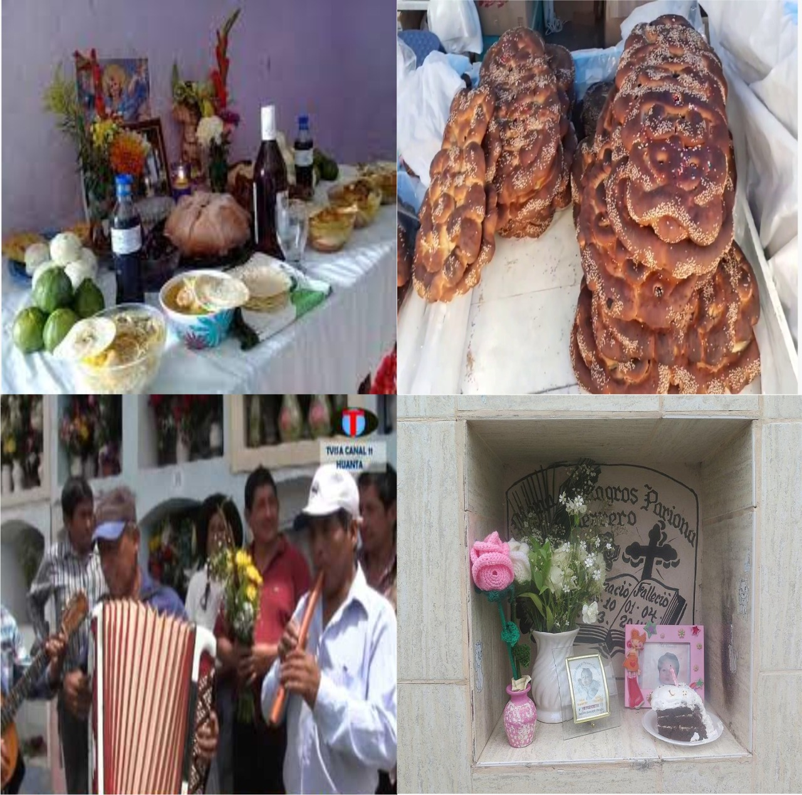

FESTIVIDADES
HUANTA
Nuestras redes sociales
CARNAVALES
Los carnavales en la ciudad de huanta inicia con el concurso de comparsas de zonas rurales, el cual se lleva un viernes antes del miércoles de ceniza, este evento se realiza en el estadio municipal, Manuel Eloy Molina Robles; el día sábado, según la tradición se realiza el ingreso del ño carnavalon, el cual diferentes comparsas se reúnen en el barrio 5 esquinas para acompañar en la entrada del ño carnavalon, para luego concluir con una presentación en el parque de los héroes.
El día domingo, lunes y martes, se lleva a cabo el concurso de diferentes comparsas de zonas rurales, urbano, urbano marginal e instituciones, en el cual se premia hasta el tercer puesto, todo estos eventos se llevan a cabo en el parque de los héroes.
Esta actividad culmina con la quema del ño carnavalon, el cual se lleva a cabo el miércoles de ceniza, en el cual se premia a las comparsas ganadoras, asimismo antes de quemar el ño carnavalon, se lee un testamento, realizado por diferentes personajes de la ciudad de huanta, el cual mediante un concurso se elige al ganador, durante todo el mes, en diferentes barrios realizan yunzas, de esta manera se unen a las celebraciones de este magnífico evento.

SEMANA SANTA
Es una festividad religiosa, el cual acoge a muchos turistas, esta actividad se lleva a cabo en el mes de marzo o abril; esta festividad inicia un viernes antes del jueves santo, dicho día sale en procesión la imagen del señor de la agonía y la imagen de la virgen dolorosa, las actividades más concurrentes de esta festividad son el domingo de ramos, miércoles santo, el jueves santo y el viernes santo.
El domingo de ramos, sale en procesión la imagen del señor de ramos en las, el lunes santo la imagen del señor de la columna, martes el señor de la sentencia, el miércoles que es un día muy concurrente por los fieles, el miércoles de encuentro sale Jesús de Nazaret en encuentro con su madre.
El jueves santo, que es un feriado calendario, se realiza la escenificación de la pasión y muerte de Jesús, este evento se da inicio en el parque central, para luego desplazarse hacia el cerro calvario donde se encuentra el mirador Cristo Blanco, en este lugar se realiza la crucifixión. El viernes santo es otro día concurrido por los turistas, una de las actividades más importantes es el sermón de las 3 horas, la desclavación y la procesión del Señor del Santo Sepulcro.
FESTIVAL DEL CHOCLO
Esta festividad se lleva a cabo en el distrito de Iguain, en el mes de marzo, es un distrito que se caracteriza por la siembra del maíz y queda aproximadamente a 20 minutos de la ciudad de Huanta.
Se realiza diferentes actividades, las más representativas son la feria de platos típicos en base a choclo.
Otra de las actividades es la presentación de artistas musicales, el reinado de la mis choclo, entre otros.
Durante esta festividad, también se realiza el festival de la pachamanca a la tierra, es un plato muy representativo durante la festividad ya que contiene diversidad de ingredientes, en especial la humita.
Para llegar al distrito de Iguain, hay colectivos que laboran todos los días, la localidad se encuentra en la salida hacia huamanga
FIESTA DE LAS CRUCES Y FESTIVAL DE LA PALTA
La palta es un fruto muy reconocido y representativo para huanta, su mayor producción es en el distrito frutícola de Luricocha.
Esta festividad se lleva a cabo en el distrito de luricocha, que se encuentra a 10 minutos de la ciudad de Huanta, esta festividad se lleva a cabo entre el 1 al 3 de mayo.
Durante esta festividad se lleva a cabo el concurso de platos típicos en base a la palta, donde se exhibe también la ensalada de palta más grande, asimismo hay presentación de artistas musicales, entre otros.
Asimismo por la fiesta de las cruces, se lleva a cabo el concurso de chunchos, es una costumbre que está reconocido por el ministerio de cultura como patrimonio cultural, asimismo se lleva a cabo la carrera de cruces, en el cual diferentes grupos de personas cargan una cruz pesada hacia el cerro pachapunya, que es el mirador del distrito de Luricocha.
FIESTA DEL SEÑOR DE LA ASCENSIÓN
Esta festividad se realiza en el mes de junio en la misma ciudad de Huanta, en el parque la alameda.
La principal actividad que se realiza es la fiesta al Señor de la Ascensión, patrón de la parroquia con el mismo nombre, durante la festividad, la imagen sale en procesión por los rededores del parque la Alameda.
Otras actividades que se realizan en esta festividad, son la exhibición de platos típicos, presentación de artistas musicales, juegos mecánicos, entre otros.
FESTIVAL DEL CAFE
El Festival del Café Orgánico en el distrito de Sivia en el VRAE, es un evento que busca resaltar la producción del café orgánico como una alternativa a la producción de hoja de coca, en esta zona del Perú.
Durante el Festival se realizan concursos donde los agricultores demuestran sus destrezas en la cosecha del café, como también en el secado del grano de café.
Así mismo se realizan campeonatos deportivos inter comunidades e Inter barrios, y no falta el certamen de belleza de la miss café que se disputan bellas señoritas de nuestro querido VRAEM, de igual manera se realizan concursos de canto y para cerrar con broche de oro la serenata con artistas exclusivos para divertirse y disfrutar hasta las últimas consecuencias.
FERIA DEL SEÑOR DE MAYNAY
La feria del Señor de Maynay, se realiza en el mes de setiembre en la pampa de maynay, es una feria reconocida internacionalmente, asimismo una de las festividades más grandes e importantes de la provincia de Huanta y región Ayacucho.
En esta festividad se realizan diferentes actividades: exhibición de plato típicos de la región, feria de ganados, concurso de frutos del valle, presentación de artistas musicales, juegos mecánicos, carrera de autos, entre otros.
Asimismo, durante la festividad, sale en procesión la imagen del Señor de maynay Y la imagen de la Virgen Dolorosa, en el cual muchos fieles católicos visitan el santuario del Señor de Maynay y acompañan la procesión.
La pampa de maynay, se encuentra a 10 minutos de la ciudad de huanta, para esta festividad, muchos colectivos prestan servicio a la ciudadanía durante las 24 horas del día.
- 


FESTIVAL DEL TANTA WAWA
El festival de la tanta wawa se lleva a cabo al rededor del mercado central, asimismo en el centro poblado la florida.
La principal actividad en esta festividad es el concurso del mejor pan wawa o el concurso del pan wawa más grande.
esta festividad se lleva a cabo en el mes de noviembre, juntamente con el día todos los santos y día de los difuntos, por ende, muchos ciudadanos visitan el cementerio general de huanta, donde también hay una pequeña feria donde se exhiben platos típicos y diferentes bebidas de la provincia.
Huanta Huantata Riksisun contactos